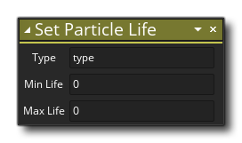

Beschreibung
Mit dieser Aktion wird die Lebensdauer des angegebenen Partikeltyps festgelegt. Zuerst geben Sie den Partikeltyp-ID-Wert an (der Wert, der beim Erstellen des Partikels mithilfe der Aktion "Partikeltyp erstellen" zurückgegeben wurde ). Anschließend können Sie die minimale und maximale Lebensdauer des Partikels in Spielframes festlegen. Wenn Ihr Spiel beispielsweise eine Bildrate von 60 Frames pro Sekunde hat, dann bedeutet das Einstellen der Lebensdauer auf 60, dass die Partikel eine Sekunde auf dem Bildschirm bleiben, bevor sie verschwinden. Wenn Sie zwei verschiedene Werte verwenden, wird für jeden Partikel, der erzeugt wird, eine zufällige Lebensdauer innerhalb des angegebenen Minimums und Maximums festgelegt. Beachten Sie, dass alle Werte positive ganze Zahlen sein sollten.
WICHTIG! Das Festlegen sehr langer Lebensdauern und das Ausstoßen hunderter Partikel kann Probleme auf leistungsschwächeren Computern und mobilen Geräten verursachen. Seien Sie vorsichtig bei der Einstellung der Partikellebensdauer, um den visuellen Effekt zu maximieren, minimieren Sie jedoch die Leistungskosten und verwenden Sie Partikel mit sehr langer Lebensdauer nur sparsam.
Aktionssyntax:
Argumente:
Streit Beschreibung Type ID Der ID-Wert für den globalen Typ zum Festlegen der Lebensdauer von Min Life Die minimale Lebensdauer eines Partikels (in Spielrahmen) Max Life Die maximale Lebensdauer eines Partikels (in Spielrahmen)
Beispiel:

Der obige Aktionsblockcode erstellt einen neuen Partikeltyp und weist seinen eindeutigen ID-Wert einer globalen Variablen zu. Anschließend werden alle Eigenschaften für den Partikeltyp festgelegt.